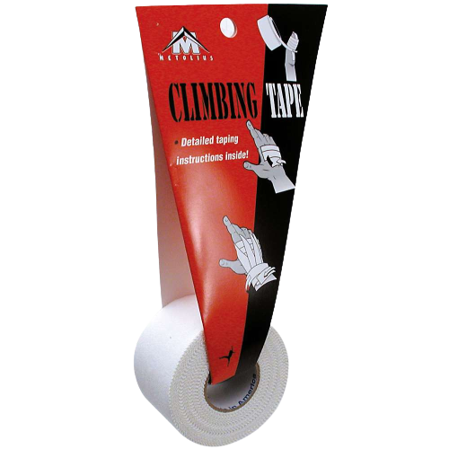
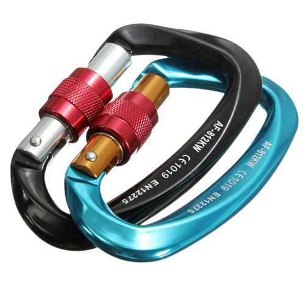
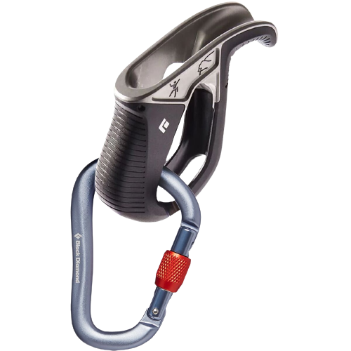
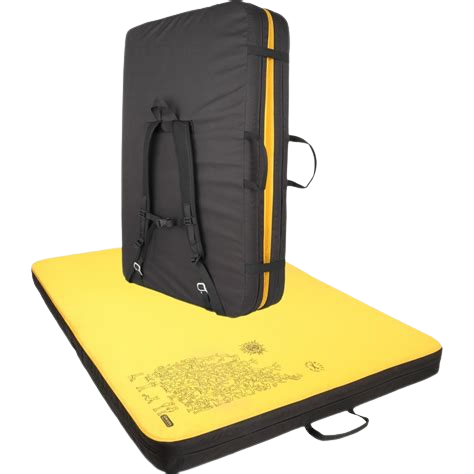
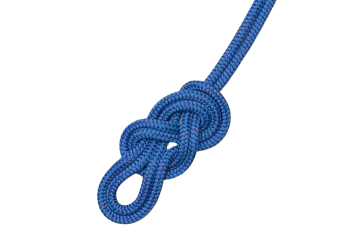

Bouldering Gear
Alright so you decided that you want to climb in a gym. Now we need to get you some gear so you can be on the wall. First things first you'll need some climbing shoes. This is technically the bare minimum to climb but I'd recommend reading more to make the experience more comfortable for yourself. Most gyms allow you to rent almost all of this gear so no worries about buying it yourself.

Next you'll need some chalk and tape for yourself. This you will most likely have to buy. But I can assure you it's worth the investment. Chalk keeps your hands dry and grippy, You can never have enough of it. Tape can help prevent injuries or temporarily let you ignore them till your session is done. If your skin feels really thin or if you get a cut you can tape that bad boy up and continue on the wall.
 |
 |
Top Rope Gear
If you've decided you want to climb a little bit higher than bouldering allows i recommend you rent out a harness and try out sport climbing. The harness is meant to withstand 10 - 14 kilonewtons of force. Comparing this to the hardest fall you can take on a rope being roughly 3kn(roughly 700lbs!), it's almost impossible to break a harness.

Now if you're climbing alone these aren't necessary but if you have a friend you should totally get trained on an ATC. (which requires you to have a carabiner with you to operate) ATCs are what allow one person to belay another. To summarize, it allows you to make sure the other person doesn't fall to their doom. Most gyms will allow you to rent an atc and a carabiner as well, but i'd highly recommend you buy your own.
|  |  |
Gym Gear
This page will teach you what you need to bring to the wall as an indoor climber. This is also the bare minimum to climb in general as a gym will provide a lot for you.
 Gym Gear
Gym Gear
Outdoor Gear
This page will show you what is needed on top of the normal gear covered on the gym page. This mainly covers necessary items to stop your body from hitting the ground.
 Outdoor GearKnots to know
Here you will learn some of the knots that can be either necessary or very handy depending on what situation you, or your partner get yourselfs into.
 Knots to KnowBody care
Lastly, I'll teach you how to keep your body running like a well oiled machine. Skincare, flexibility and antagonistic training is necessary for any climber that wants to stay injury free.
 Body care
Body care